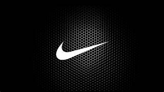

Nike es la marca deportiva número 1 en el mundo. Es de sobra conocida por todos y pese a partir con desventaja, consiguió superar a toda su competencia. Eso sí, su éxito no ha sido fruto de la casualidad, pues se ha trabajado mucho para conseguir este tremendo éxito.
El nacimiento de la famosa marca de calzado Nike, surgió por la motivación de un curioso entrenador de atletismo de la Universidad de Oregon, Bill Bowerman, cuando en 1950 intentó darles ventaja a sus deportistas durante las competencias. Uno de sus alumnos fue Phil Knight, que como amante del deporte quiso ser parte del equipo de Bowerman. A la medida que fueron integrándose, durante largas charlas, llegaron a la conclusión que era necesario realizarle modificaciones al calzado de competencia. Dichas disertaciones, sería lo que los motivo a redactar una propuesta a algunas compañías manufactureras de calzado en Japón, para persuadirlos de realizar modificaciones a sus productos y ganar el dominio de la industria del calzado deportivo en Estados Unidos. Ante la poca respuesta, el joven se tomó el trabajo de comunicarse con la marca Tiger de Onitsuka en Japón para proponerles que él fuese un distribuidor de la marca en los Estados Unidos, asegurándoles que sería un proyecto viable debido a la inconformidad de muchos atletas por los calzados vendidos en Oregon. Finalmente, llegaron a dicho acuerdo. Phil recibió su primera entrega meses después. Lo primero que hizo fue comentarle la noticia a su entrenador y llevarle unos pares para que apoyara la venta. Bowerman, prefirió realizarle una propuesta para que se unieran y realizaran modificaciones a los zapatos Tiger. Con la alianza pactada, en 1960, y la inyección monetaria de 500 dólares por parte del técnico y del estudiante, nace la sociedad bajo el nombre de Blue Ribbon Sports, una distribuidora de calzado deportivo de la marca japonesa Tiger. Realizaron su primera orden de más de 100 pares de zapatos iniciando el año 1964, dichos pares fueron vendidos por Knight en su local. Recordando el espíritu curioso de Bowerman, y su obsesión por mejorar el calzado para los atletas, alteró algunos pares de los Tiger para realizar modificaciones con el fin de hacerlos más ligeros. Una vez realizado el cambio le dijo a uno de sus corredores que los probara. La modificación no dio mucho resultado. Como BRS iba creciendo, merecía tiempo para manejar las ventas, las finanzas y todos los cuidados que merece una distribuidora. Ni Bowerman ni Knight tenían el tiempo porque tenían otras profesiones. Entonces, decidieron poner al cargo de la empresa al atleta Jeff Johnson, a quien Knight había conocido en Stanford. Jeff no solamente lograría cumplir con el deber que Bill y Phil le habían confiado, sino que fue una pieza clave dentro del avance del pequeño negocio. Este joven se enfocó en algo fundamental, la cuestión publicitaria. Johnson crearía los primeros cuadernillos de productos, anuncios impresos y materiales de marketing. Para evitar gastos innecesarios él mismo tomaba las fotos para los catálogos de la empresa.